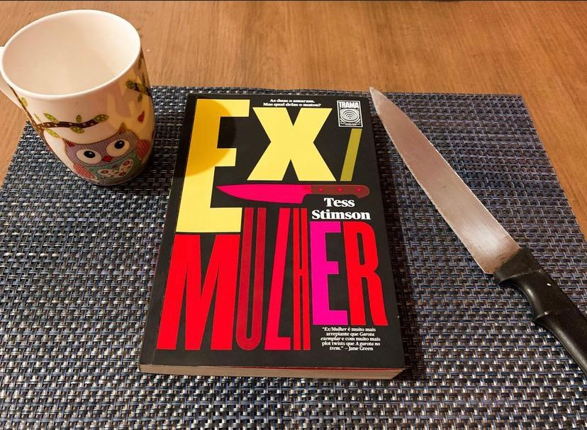

Ex/Mulher
(Tess Stimso - Trama)
⭐⭐⭐⭐⭐
Louise foi literalmente trocada há 4 anos atrás, Andrew se casou com Caz e agora tem uma nova família. Louise mesmo após todo esse tempo ainda não superou e ambas as mulheres a Ex e agora a atual Mulher vivem em pé de guerra e no meio de toda essa guerra, enquanto investigam uma a outra vão descobrir mais sobre a vido o marido e bom, isso pode não ser nem um pouco agradável.
Um belo dia Andrew é assassinado em uma festa de família e as duas mulheres estão ensangüentadas diante do homem morto. Qual das duas pode ser a real assassina?
Como eu poderia começar a descrever essa narrativa maravilhosa ? Surto atrás de surto. O livro é contado através do ponto de vista de Louise, Caz e depoimentos que os personagens dão a polícia. A cada capítulo vamos descobrindo mais sobre as mulheres e também sobre o homem com que se casaram.
Andrew é um homem tóxico, egocêntrico, manipulador e preciso dizer que, me fez sentir cada vez mais nojo da cara dele conforme a trama ia avançando. Muitas vezes ficava me perguntando como essas duas mulheres podiam ficar em pé de guerra por um cara tão desprezível.
Tess Stimso acertou a mão na escrita e nos faz a cada capítulo questionar cada uma das mulheres e muitas vezes escolher um lado, sempre percebendo que elas tinham motivos de sobra pra querer ver o cara morto.
Os personagens são muito bem construídos, quero destacar tanto os personagens principais quanto os secundários. Os conflitos mantém a narrativa frenética e faz com que você queira cada vez mais saber tudo que envolve esse bizarro assassinato.